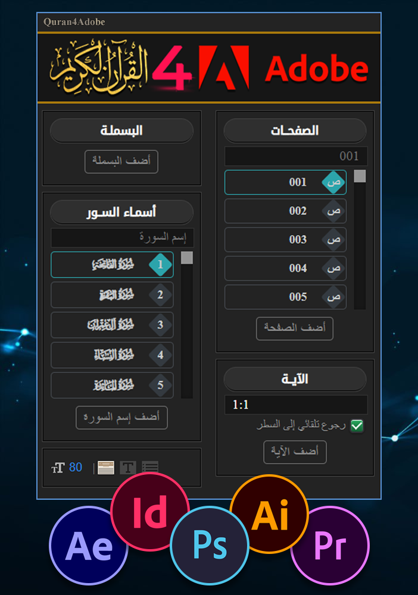

V1.3.2
الحمد لله رب العالمين. والصلاة والسلام على أشرف المرسلين، وعلى آله وصحبه ومن والاه ومن تبعهم بإحسان وإهتدى بهديهم وسار على نهجهم إلى يوم الدين.
قمنا وبحمد الله بإنشاء هذه الأداة مفتوحة المصدر التي تسمح بإدراج النص القرآني بطريقة سهلة وميسرة على برامج أدوبي، تتيح هذه الأداة إضافة البسملة وإسم السورة والصفحة والآيات القرآنية بسرعة وسهولة إلى مشاريعكم مما يوفر الوقت والجهد، ... وصلى الله على نبينا محمدﷺ

1- أولا تقوم
بتحميل الأداة.
2- ثم تقوم بتفريغ الملف المضغوط إلى مجلد في جهازك.
3- تقوم بتثبيت جميع الفونتس الموجودة في المجلد fonts وذلك عن طريق تحديد جميع الفونتس والضغط على
تثبيت.
4- ثم تقوم بوضع مجلد الأداة Quran4Adobe 1.3.2 في المكان المخصص للإضافات وهو :
C:\Program Files (x86)\Common Files\Adobe\CEP\extensions
وعلى نظام التشغيل ماك أو إس :
~/Library/Application Support/Adobe/CEP/extensions
5- والآن ما عليك إلا البدأ بإستعمال الأداة.
وهذا فيديو توضيحي لعملية التحميل والتثبيت :
إذا وجدت مشكلة أو كنت ترغب في طلب ميزة جديدة، فما عليك سوى إنشاء issue جديد. تأكد من ملء أكبر قدر ممكن من المعلومات. كل الإقتراحات والتحسينات مرحب بها.